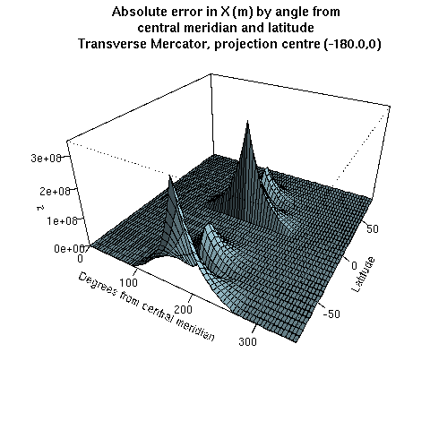
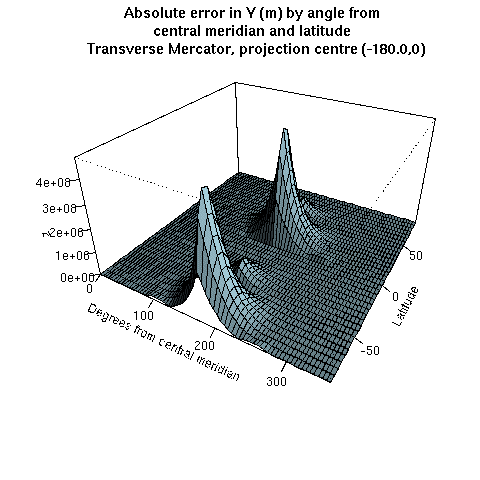

The transformation from "NAD27 / Idaho Central" to "NAD83 / Idaho Central" do not give the expected value according OpenGIS tests. However, the ArcInfo commercial software gives the same result than our CTS library. We don’t know at this time if we missed some important parameter or if this is an error in the OpenGIS test suite.
Most projection implementations use a special set of equations for spherical earth model (i.e. when the semi-major and semi-minor axis has the same length). In the particular case of the transverse Mercator projection, there is a discrepancy between the results of spherical and ellipsoidal equations when the point is far away from the central meridian. At the projection center, there is no discrepancy. At the latitude of origin, the discrepancy in x is 0.003691 meters for a point at 10° from the central meridian. The discrepancy increases to 1.9498 meters at 20° from the central meridian, and continue to increase steadily after this. The discrepancy varies also by latitude a bit. The graphics below shows the discrepancy.
